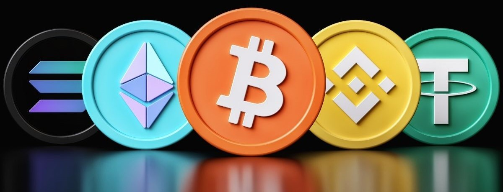
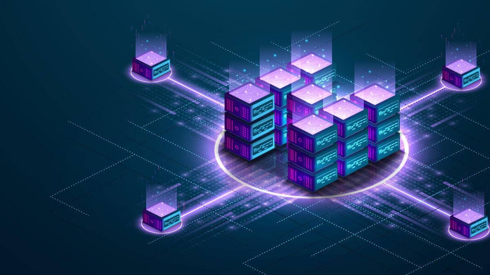

تجارت ارزهای دیجیتال و فناوری بلاکچین
زمان خواندن: 20 دقیقه
فهرست مطالب
ارز دیجیتال چیست؟
ارز دیجیتال هر ارزی است که منحصراً به صورت الکترونیکی در دسترس است. نسخه های الکترونیکی ارز در حال حاضر بر سیستم های مالی اکثر کشورها تسلط دارند. آنچه ارز دیجیتال را از ارز الکترونیکی که قبلاً در حساب های بانکی آمریکایی ها وجود دارد متمایز می کند این است که ارز دیجیتال هرگز شکل فیزیکی به خود نمی گیرد.
شما می توانید همین الان به ATM(دستگاه خود پرداز) بروید و به راحتی رکورد الکترونیکی موجودی ارز خود را به دلار فیزیکی تبدیل کنید. با این حال، ارز دیجیتال هرگز از یک شبکه کامپیوتری خارج نمی شود و منحصراً از طریق ابزارهای دیجیتال مبادله می شود.
سه نوع اصلی ارز دیجیتال وجود دارد: ارز دیجیتال، استیبل کوین و ارز دیجیتال بانک مرکزی که به عنوان CBDC شناخته می شود.
فناوری بلاک چین ، که پایه و اساس ارزهای دیجیتال را فراهم می کند، رایج ترین شکل دفتر کل توزیع شده است که توسط ارزهای دیجیتال استفاده می شود. با توجه به CoinMarketCap، بیش از 9000 ارز دیجیتال موجود است.
این ارزها به طور عمومی بر اساس فناوری دیجیتال و رمزنگاری کار میکنند و امکان انتقال و مبادله ارزی بین افراد را فراهم میکنند، بدون نیاز به واسطههای سنتی مانند بانکها یا موسسات مالی.
فروشندگان و خدماتدهندگان از ارزهای دیجیتال برای پذیرش پرداختهای آنلاین استفاده میکنند. برای مثال، کسب و کارهایی مانند فروشگاههای آنلاین، سرویسهای اینترنتی، و رستورانها میتوانند ارزهای دیجیتال را به عنوان روشی برای پذیرش پرداخت از مشتریان خود انتخاب کنند.و حتی در بسیاری از بازیهای کامپیوتری نیز ارزهایی ایجاد شدهاند که کاربران با استفاده از آنها میتوانند فعالیتهای مختلفی در درون بازی داشته باشند و از آنها به عنوان پول برای خرید داراییهای درون بازی استفاده کنند. در بسیاری از موارد این پولها قابل خرید و فروش با ارز فیات نیز هستند. با توجه به دلایل مطرح شده میتوان از واژه ارز دیجیتال برای توکنهای بازیهای کامپیوتری نیز استفاده کرد.
کریپتوکارنسیها یا رمز ارزها از این جهت که در فضای دیجیتال ایجاد شدهاند و استفاده از آنها توسط سیستمهای دیجیتال امکانپذیر است، نوعی ارز دیجیتال هستند اما تفاوتهای بنیادی بین رمز ارزها و ارزهای دیجیتال وجود دارد. در ادامه به سوال کریپتوکارنسی چیست پاسخ میدهیم و تفاوتهای آن با سایر ارزهای دیجیتال را بررسی میکنیم.
تاریخچه ارز دیجیتال
- مفهوم ارز دیجیتال اولین بار در داستان های علمی تخیلی و سیستم های پرداخت دیجیتال اولیه مورد بررسی قرار گرفت. در سال 1983، دیوید چاوم، رمزنگار، ایده پول نقد دیجیتال را در مقاله خود "امضاهای کور برای پرداخت های غیرقابل ردیابی" معرفی کرد.
- DigiCash، یک شرکت نقدی الکترونیکی، توسط Chaum در سال 1989 تاسیس شد اما در سال 1998 ورشکستگی داد.
- E-gold که در سال 1996 معرفی شد، اولین پول اینترنتی پرکاربرد بود که توسط دولت ایالات متحده در سال 2008 تعطیل شد.
- در سال 1997، کوکاکولا خرید از دستگاههای فروش خودکار با استفاده از پرداختهای تلفن همراه را پیشنهاد کرد.
- PayPal که در سال 1998 راه اندازی شد، پرداخت های آنلاین را متحول کرد و نقشی اساسی در رونق تجارت الکترونیک ایفا کرد.
- اصطلاح "ارز رمزنگاری" با راه اندازی بیت کوین در سال 2009 توسط خالق(های) مستعار ساتوشی ناکاموتو ابداع شد و از طریق کاغذ سفید با عنوان "Bitcoin: A Peer-to-Peer Electronic Cash System" یک ارز دیجیتال غیرمتمرکز را به جهان معرفی کرد.
- فناوری زیربنایی بیت کوین، بلاک چین، یک سیستم دفتر کل غیرمتمرکز و غیرقابل اعتماد را معرفی کرد.
انواع پول دیجیتال
به لطف پشتوانه تکنولوژیکی آن، پول دیجیتال می تواند برای اهداف متعدد سازگار شود و می تواند اشکال مختلفی داشته باشد. علاوه بر نمایش دیجیتالی پول نقد که در حال حاضر استفاده می شود، تعداد کمی دیگر وجود دارد - و احتمالاً تعداد بیشتری نیز ظاهر خواهند شد.

ارزهای دیجیتال بانک مرکزی (CBDC)
ارزهای دیجیتال بانک مرکزی (CBDCs) ارزهایی هستند که توسط بانک مرکزی یک کشور صادر می شوند. آنها جدا از ارزهای فیات هستند که با پشتوانه اقتدار و اعتبار بانک مرکزی پشتیبانی می شوند و یکی دیگر از تعهدات این موسسه هستند.
وقتی صحبت از پول دیجیتال به میان می آید، CBDC ها نوزاد هستند. برخی از کشورها آنها را اجرا کرده اند، اما بسیاری از آنها با هوشیاری مراقب خود هستند و منتظرند ببینند این ایده در کشورهایی که آنها را آزمایش می کنند چگونه عمل می کند.
حتی پیشنهاداتی برای انواع مختلف CBDC وجود دارد. به عنوان مثال، نوعی به نام CBDC عمده فروشی می تواند در تراکنش های بین بانک ها و مؤسسات مالی برای پرداخت های عمده فروشی استفاده شود - پرداخت های بزرگ یا با ارزش بین موسسات. CBDC های خرده فروشی را می توان برای معاملات روزانه مصرف کنندگان و مشاغل طراحی کرد، دقیقاً مانند ارزهای فیات.
ارزهای رمزنگاری شده(Cryptocurrencies)
کریپتوکارنسی ها یک ارز دیجیتالی هستند که با استفاده از رمزنگاری طراحی شده اند. آنها معمولاً به عنوان ارزهای مجازی شناخته می شوند، زیرشاخه ای از ارزهای دیجیتال، در تلاش برای متمایز کردن آنها از پول رسمی شناخته شده.
بسته بندی رمزنگاری در اطراف یک ارز دیجیتال امنیت بیشتری را فراهم می کند و تراکنش ها را در برابر دستکاری مقاوم می کند. از سال 2017، محبوبیت ارزهای دیجیتال به عنوان یک کلاس سرمایه گذاری، ارزش بازار بازارهای رمزنگاری را به شدت افزایش داده است. تا نوامبر 2021، ارزش بازار ارزهای دیجیتال از 2.7 تریلیون دلار فراتر رفت. زمستان سال 2022 شاهد کاهش کل ارزش بازار ارزهای دیجیتال به زیر 1 تریلیون دلار بود، اما در سال 2023 شروع به بهبود کرد و در مارس 2024 به بیش از 2.5 تریلیون دلار رسید.
استیبل کوین ها(Stablecoins)
استیبل کوین ها نوعی از ارزهای دیجیتال هستند و برای مقابله با نوسانات قیمت ارزهای دیجیتال معمولی توسعه یافته اند. استیبل کوینها را میتوان به شکلی از پول خصوصی تشبیه کرد که قیمت آن به ارز فیات یا سبد کالا مرتبط است تا از پایداری آنها اطمینان حاصل شود. آنها می توانند نماینده ای برای ارزهای فیات باشند، با این تفاوت که توسط مقامات دولتی پشتیبانی نمی شوند. بازار استیبل کوین ها در چند وقت اخیر منفجر شده است. تا ژانویه 2024، 168 استیبل کوین در CoinMarketCap، جمعآوری کننده داده رمزنگاری محبوب فهرست شده بود که برخی از آنها فعالیتی نشان نمیدادند.
پول دیجیتال و کیف پول دیجیتال(Digital Wallets)
کیف پول های دیجیتال به عنوان سنگ بنای اکوسیستم پول دیجیتال عمل می کنند. کیف پول دیجیتال رابط اصلی است که در آن کاربران با ارزهای دیجیتال خود تعامل و مدیریت می کنند. آنها یک محیط امن برای ذخیره و مدیریت پول دیجیتال فراهم می کنند.

یکی از جنبه های اساسی کیف پول های دیجیتال، نقش آن ها در تسهیل تراکنش ها (بدیهی است که شامل پول دیجیتال است) است. کاربران با تعامل با رابط های نرم افزاری، پرداخت ها را از طریق کیف پول دیجیتال خود ارسال و دریافت می کنند. در نظر بگیرید که چگونه از طریق برنامه های محبوب بانکی یا مالی شخصی برای یک دوست پول ارسال کرده اید. این برنامه ها ممکن است دارای کیف پول دیجیتال یا فناوری های مشابهی باشند که انتقال وجوه را تسهیل می کند.
یکی از مزیت های کلیدی کیف پول های دیجیتال قابلیت دسترسی و تحرک آن ها است. کاربران در هر زمان و هر مکان، تا زمانی که به اینترنت متصل باشند، به پول دیجیتال خود دسترسی فوری دارند. این تحرک به کاربران این امکان را میدهد تا با استفاده از تلفنهای هوشمند یا سایر دستگاههای دارای اینترنت در حال حرکت، تراکنشهای خود را انجام دهند. این مفهوم یکی از مزایای اصلی ارز دیجیتال است: هر کسی در سراسر جهان می تواند به خدمات بانکی دسترسی داشته باشد که در غیر این صورت در بسیاری از مناطق جهان محدود شده است.
در نهایت، امنیت در حوزه پول دیجیتال بسیار مهم است. اگر جابجایی پول واقعا آسان است، اگر دیگران به حساب شما دسترسی پیدا کنند، انتقال پول شما برای دیگران آسان است. کیف پول های دیجیتال ممکن است شامل تکنیک های رمزگذاری، احراز هویت چند عاملی و روش های احراز هویت بیومتریک برای محافظت از دارایی های دیجیتال باشد.
تفاوت ارز دیجیتال با رمز ارز ها(Cryptocurrencies)
ارز دیجیتال یک اصطلاح گسترده است که همه انواع پول را در قالب دیجیتال در بر می گیرد. این تراکنش های آنلاین را با حذف نیاز به پول نقد فیزیکی ساده می کند و می تواند متمرکز (مانند پول الکترونیکی صادر شده توسط بانک ها) یا غیرمتمرکز باشد.
کریپتوکارنسی، زیرمجموعه ای از ارز دیجیتال، یک چارچوب انقلابی را معرفی می کند که از اصول رمزنگاری برای امنیت تراکنش ها استفاده می کند و معمولاً بر روی یک سیستم غیرمتمرکز به نام بلاک چین کار می کند.
در حالی که همه رمز ارز ها ارز دیجیتال هستند، همه ارزهای دیجیتال رمزنگاری نیستند.
تمایز اولیه در ساختار و مدیریت آنها نهفته است: ارزهای دیجیتال اغلب توسط موسسات متمرکز نظارت می شوند، در حالی که رمز ارز ها در شبکه های توزیع شده عمل می کنند و نیاز به واسطه را از بین می برند.
همانطور که جهان به سمت یک چشم انداز مالی دیجیتالی تر حرکت می کند، درک تفاوت های ظریف بین رمز ارز و ارز دیجیتال برای کاربران، سرمایه گذاران و قانون گذاران به طور یکسان حیاتی می شود.
کریپتوکارنسی چیست؟

کریپتوکارنسی (Cryptocurrency) به معنای یک نوع ارز دیجیتال است که از تکنولوژی رمزنگاری برای امنیت و تأیید تراکنشها استفاده میکند و به صورت غیرمتمرکز عمل میکند. در واقع، کریپتوکارنسیها بر اساس فناوری بلاکچین (Blockchain) ساخته میشوند که یک سیستم دیجیتال و توزیعشده است که به طور خودکار و بدون نیاز به واسطهگر (مانند بانک یا مؤسسه مالی) تراکنشها را ثبت و تأیید میکند.
ارز رمزنگاری شده یک رشته رمزگذاری شده از داده ها است که یک واحد ارز را نشان می دهد. شبکههای همتا به همتا به نام بلاک چین، تراکنشهای ارزهای دیجیتال مانند خرید، فروش و انتقال را نظارت و سازماندهی میکنند و همچنین به عنوان دفتر کل امن تراکنشها عمل میکنند. با استفاده از فناوری رمزگذاری، ارزهای دیجیتال می توانند هم به عنوان ارز و هم به عنوان یک سیستم حسابداری عمل کنند.
کریپتوکارنسی یک ارز دیجیتال یا مجازی است که قرار است وسیله مبادله باشد. این ارز کاملاً شبیه ارز دنیای واقعی است، با این تفاوت که هیچ گونه تجسم فیزیکی ندارد و از رمزنگاری برای کار استفاده می کند.
از آنجایی که ارزهای رمزنگاری شده به طور مستقل و به صورت غیرمتمرکز، بدون بانک یا مرجع مرکزی کار می کنند، تنها پس از برآورده شدن شرایط خاص می توان واحدهای جدید اضافه کرد. به عنوان مثال، با بیت کوین ، تنها پس از اضافه شدن یک بلاک به بلاک چین، به استخراج کننده بیت کوین پاداش داده می شود و این تنها راهی است که می توان بیت کوین های جدید تولید کرد. حد مجاز بیت کوین 21 میلیون است. پس از این، دیگر بیت کوینی تولید نخواهد شد.
در چشمانداز در حال تحول مالی و فناوری، نقش امنیت سایبری در حوزه ارزهای دیجیتال بسیار مهم است. BootCamp امنیت سایبری بستری ایدهآل را برای افراد فراهم میکند تا در پیچیدگیهای ایمن سازی داراییهای دیجیتال و تراکنشها در حوزه ارزهای رمزنگاری شده تحقیق کنند. با کسب تخصص در اصول رمزنگاری، امنیت بلاک چین و مدیریت ریسک، شرکتکنندگان برای مقابله با چالشهای منحصربهفرد ارزهای دیجیتال مجهزتر میشوند.
رمزنگاری یا کریپتوگرافی چیست ؟
همانطور که در بخش کریپتو چیست گفته شد، کریپتو به معنی رمز است. «کریپتوگرافی» (Cryptography) یا رمزنگاری یکی از تکنولوژیهایی است که در ایجاد کریپتوکارنسیها نقش اساسی ایفا کرده است. رمزنگاری به طور کلی با سه روش «رمزنگاری کلید متقارن» (Symmetric Key Encryption)، «رمزنگاری نامتقارن» (Asymmetric Key Encryption) و «توابع هش» (Hash Functions) انجام میشود. هدف رمزنگاری انتقال و ثبت امن اطلاعات است.
در روش رمزنگاری کلید متقارن، تنها از یک کلید برای «رمزگذاری» (Encryption) و «رمزگشایی» (Decryption) استفاده میشود. در این حالت، اگر شما بخواهید با یک سرور یا شخص که به او اطمینان ندارید ارتباط برقرار کنید به مشکل خواهید خورد. این روش بیشتر برای امن نگه داشتن اطلاعات استفاده میشود. به عنوان مثال، اگر شما بخواهید اطلاعات خود را در یک سیستم به صورت امن ذخیره کنید میتوانید از این نوع رمزنگاری استفاده کنید چرا که در این حالت، نیاز نیست کلید خود را در اختیار دیگران قرار دهید.
روش رمزنگاری نامتقارن برای رمزگذاری از «کلید عمومی» (Public Key) و برای رمزگشایی از «کلید خصوصی» (Private Key) استفاده میکند. در این حالت امکان ارتباط با سرورها و اشخاص بدون اعتماد به آنها نیز به وجود میآید. به عنوان مثال اگر کسی قصد انتقال پول به حساب شما را داشته باشد، شما میتوانید شماره حساب خود را به راحتی برای او ارسال کنید، چرا که هیچ شخصی با داشتن شماره حساب نمیتواند به حساب بانکی شما دسترسی داشته باشد. در نهایت، پس از ارسال مبلغ مورد نظر از طرف مقابل، شما میتوانید با وارد کردن رمز کارت خود که همان کلید خصوصی حساب شما است، به حساب خود دسترسی داشته باشید و از مقدار انتقال داده شده آگاه باشید.
نوع دیگری از رمزنگاری که در کریپتوکارنسیها نیز از آن استفاده میشود، توابع هش هستند. این توابع به ازای هر ورودی منحصر به فرد، یک خروجی منحصر به فرد تولید میکنند. طول خروجی برای هر ورودی ثابت است و امکان رسیدن به ورودی از خروجی وجود ندارد. توابع هش به منظور اتصال بلوکهای اطلاعاتی به یکدیگر در بلاک چین و همچنین فراهم آوردن امکان رقابت برای ثبت و تایید تراکنشها استفاده میشود. در بخش بعدی از مقاله کریپتو چیست که مربوط به ساختار کریپتوکارنسیها است، فرآیند تولیدر رمزارزها را بررسی میکنیم.
فهرست برخی رمز ارز های محبوب
بیت کوین
نماد تیکر: BTC
ارزش بازار: بیش از 435 میلیارد دلار
علیرغم هزاران رقیب، بیت کوین - اولین و بزرگترین ارز دیجیتال - از نظر حجم و ارزش اقتصادی همچنان پیشرو است. بیت کوین از نظر ارزش بازار، پایگاه کاربر و محبوبیت همچنان در بازار ارزهای دیجیتال پیشتاز است. بیت کوین که در سال 2009 توسط ساتوشی ناکاموتو راه اندازی شد، به بالاترین قله خود یعنی 68000 دلار در سال 2021 رسید. بیت کوین از قراردادهای هوشمند و DApps پشتیبانی می کند زیرا به روز رسانی های اصلی آن مانند شبکه لایتنینگ و به روز رسانی ریشه اصلی است.
بیت کوین در حال حاضر تا ژانویه 2023 با قیمت 22950 دلار معامله می شود.
قیمت بیت کوین بسیار نوسان است. بیت کوین از زمان راه اندازی آن در سال 2009 از 0.07 دلار به 68521 دلار در تاریخ 5 نوامبر 2021 رسیده است.
اتریوم
نماد تیکر: ETH
ارزش بازار: 190 میلیارد دلار
اتریوم یک بلاک چین غیرمتمرکز منبع باز با عملکرد قرارداد هوشمند است. اتریوم دومین ارز دیجیتال بزرگ است که پس از بیت کوین، جایگاه بسیار قوی و مسلطی در بازار کریپتو دارد. اتریوم روی بلاک چین خود کار می کند و از قراردادهای هوشمندی پشتیبانی می کند که روی بلاک چین خود اجرا می شوند و در صورت برآورده شدن شرایط خاص به صورت خودکار اجرا می شوند. اتر ارز دیجیتالی است که بر روی بلاک چین اتریوم اجرا می شود.
ETH که در سال 2015 راه اندازی شد، در حال حاضر در حدود 1500 دلار از ژانویه 2023 معامله می شود.
در سال 2022، اتریوم از مدل اثبات کار به اثبات سهام تغییر کرد، که به عنوان یکی از بزرگترین انتقال ها در دنیای ارزهای دیجیتال در نظر گرفته می شود. قابل توجه است زیرا کاهش چشمگیری در قسمت جلوی ردپای انرژی را نشان می دهد.
سکه بایننس
نماد تیکر: BNB
ارزش بازار: بیش از 47 میلیارد دلار
بایننس سکه بومی صرافی بایننس است که بزرگترین صرافی ارزهای دیجیتال در جهان است. BNB در سال 2018 راه اندازی شد که برای اهداف مختلفی مانند تجارت، پرداخت کارت اعتباری، پردازش پرداخت، وام و سایر نقل و انتقالات استفاده می شود. برای تشویق به پذیرش آن، کارمزد تراکنش برای صرافی Binance برای کاربرانی که در BNB پرداخت میکنند کمتر است. بایننس برای پایدار کردن ارزش خود، درصد ثابتی از سکه های در گردش را از بین می برد یا می سوزاند.
بایننس در حال حاضر در حدود سطوح 300 دلار از ژانویه 2023 معامله می شود.
واقعیت جالب: بایننس بزرگترین هاب برای منابع رایگان کریپتو و بلاک چین است. بایننس آکادمی را در سال 2018 راه اندازی کرد که همچنین به یادگیرندگان برای افزایش دانش خود در حوزه بلاک چین و کریپتو پاداش می دهد.
فناوری بلاکچین

تکنولوژی ارزهای دیجیتال در سالهای اخیر بسیار مورد توجه قرار گرفته است و اگر با بازار ارزهای دیجیتال و رمزارزها مانند ارز دیجیتال بیت کوین آشنا باشید، احتمالاً بارها نام بلاک چین را شنیدهاید. از آنجایی که این فناوری اساس کار ارزهای دیجیتال است، اهمیت زیادی دارد که بدانید بلاکچین چیست و چگونه کار میکند
بلاک چینها بیشتر به دلیل نقش حیاتی در سیستمهای ارزهای دیجیتال برای حفظ یک رکورد امن و غیرمتمرکز در تراکنشها شناخته میشوند، اما موارد استفاده از آنها به ارزهای دیجیتال محدود نمیشود. بلاک چینها را میتوان برای تغییرناپذیر کردن دادهها در هر صنعتی مورد استفاده قرار داد. از آنها میتوان برای ایجاد برنامههای غیرمتمرکز (DApps)، سیستمهای مدیریت زنجیره تأمین، سیستمهای رایگیری و موارد دیگر استفاده کرد. فناوری بلاک چین این پتانسیل را دارد که صنایع مختلف را با ایجاد اعتماد، امنیت و کارایی متحول کند.
از زمان معرفی بیت کوین در سال ۲۰۰۹، استفاده از بلاک چین از طریق ایجاد ارزهای دیجیتال مختلف، پیدایش دیفای (DeFi)، توکن های غیرقابل تعویض (NFT) و قراردادهای هوشمند (Smart Contract) افزایش یافته است.
در تعریف بلاک چین چنین آمده است: فناوری بلاکچین ساختاری است که سوابق معاملاتی (بلاکها) را به صورت پایگاهی از دادهها به نام «زنجیره یا Chain» در شبکهای از «گرهها یا Nodeها» که به صورت همتابههمتا (Peer-to-Peer) به یکدیگر متصل شدهاند، ذخیره میکند. به کل این مجموعه «دفتر کل دیجیتال یا Digital Ledger» میگویند.
بلاکچین از چه اجزایی تشکیل شده است؟
بلاکچین از سه مفهوم اساسی و مهم تشکیل شده است:
- بلاکها (Blocks)
- ماینرها (Miners)
- گرهها (Nodes)
بلاک چیست؟
به بستههای اطلاعات در شبکه بلاکچین، بلاک یا بلوک میگویند. هر شبکه از تعداد زیادی بلاک تشکیل شده است و هر بلاک شامل سه بخش اساسی میشود:
داده (Data)
اطلاعات بلاک که شامل تراکنشهای انجام شده در بلاک است.
نانس (Nonce)
نانس یا عدد یکبارمصرف (Number used only once) در بلاک چین یک عدد ۳۲ بیتی (عددی با ۲ به توان ۳۲ یا ۴ میلیارد ترکیب مختلف) است که در هنگام ایجاد بلاک به صورت تصادفی ایجاد میشود و سپس به عنوان هدر هش در بلاک مورد استفاده قرار میگیرد.
هش (Hash)
هشها اعدادی ۲۵۶ بیتی هستند که در کنار نانس قرار میگیرند. در واقع کار ماینرها این است که نانس درستی را پیدا کنند که با استفاده از آن میتوان به هش معتبر یک بلاک دست پیدا کرد.
ماینر چیست و چه نقشی در بلاک چین دارد؟
ماینرها یا استخراجکنندگان، وظیفه ایجاد بلاکهای شبکه را در فرآیندی به نام ماینینگ یا استخراج برعهده دارند. در شبکه بلاکچین هر بلاک دارای نانس و هش اختصاصی خود است. علاوه بر این هش بلاک قبلی نیز در بلاک جدید ذخیره میشود. بنابراین فرآیند استخراج یا ساخت بلاک کار سادهای نیست؛ خصوصاً در یک شبکه بزرگ که میلیونها بلاک در آن ذخیره میشود. ماینرها از نرمافزارها و سختافزارهای قدرتمند برای حل مسائل ریاضی پیچیده استفاده میکنند تا یک nonce که توانایی قبول هش را داشته باشد، بسازند.
نود یا گره در بلاکچین چیست؟
نود یا گره، هر نوع وسیله الکترونیکی است که قابلیت ذخیرهسازی یک کپی از کل شبکه را داشته باشد و فعالیت بلاک چین را امکانپذیر کند. غیرمتمرکزسازی فرایندها و توزیع اطلاعات با استفاده از نودها در بلاکچین پیادهسازی میشود.
هر بلاک جدیدی که وارد شبکه میشود، مورد تأیید گرهها قرار میگیرد. شفافیت بلاکچین این امکان را میدهد تا تمامی اطلاعات آن به راحتی قابل بررسی و مشاهده باشد. این شفافیت مدیون حضور گرهها است. همه گرهها به صورت Peer-to-Peer به یکدیگر متصل شدهاند. این اتصال نظیربهنظیر باعث میشود تا همه آنها اطلاعات کاملاً یکسانی را ذخیره کنند. ذخیرهسازی اطلاعات با استفاده از یک سیستم کنترل قوی، به حفظ یکپارچگی شبکه کمک میکند و اعتماد را در بین کاربران ایجاد خواهد کرد.
بلاک چین چگونه کار میکند؟
در قسمت قبل با اجزای تشکیلدهنده بلاکچین آشنا شدید و حالا راحتتر میتوان فرایند انجام تراکنش در بلاک چین را توضیح داد. تراکنشها بسته به بلاک چینی که در آن انجام میشوند، از یک فرایند خاص پیروی میکنند. در بلاکچین بیتکوین، تراکنش شما به یک استخر حافظه به اسم ممپول (Mempool) فرستاده میشود؛ جایی که تراکنش ذخیره میشود و در صف قرار میگیرد تا زمانی که یک ماینر یا اعتبارسنج آن را دریافت کند. در ادامه یک ماینر بیت کوین تراکنش شما را انتخاب کرده و به یک بلاک اضافه میکند. بلاک فضایی است که در آن تراکنشهایی که کاربران درخواست پردازش آن را دادهاند، نگهداری میشود.
وظیفه ماینر در ادامه این است که با انجام یک سری محاسبات ریاضی پیچیده و حدسزدن عدد هش، انجام کار در شبکه را توسط سیستمهای پردازشی خود اثبات کند. در ادامه، بلاکی که تراکنش شما در آن جای داده شده است، در شبکه تأیید شده و به زنجیرهای از بلاکهایی که قبلاً تأیید شدهاند، اضافه میشود. ضمناً هر بلاکی که بعد از بلاک مربوط به تراکنش شما ساخته شود، یک تأیید جدید برای تراکنش شما محسوب میشود.
باید در نظر داشت روندی که توضیح داده شد در مورد شبکه بیت کوین صدق میکند، اما شبکه ارز دیجیتال اتریوم، سولانا یا سایر بلاکچینها ممکن است از فرایند دیگری برای انجام تراکنشها پیروی کنند.
کاربرد ها و موارد استفاده
-سرمایه گذاری
ارزهای دیجیتال روی یک دفتر کل توزیع شده با نام بلاکچین اجرا میشوند که ذخیرهای از تمامی تراکنشهای بهروز شده است. ارزهای دیجیتال جدید از طریق فرایندی به نام ماینینگ به وجود میآیند که به آن استخراج هم گفته میشود. ماینینگ در واقع استفاده از قدرت کامپیوتر برای حل مسائل پیچیدهی ریاضی برای تولید کوینها است.
البته ماینینگ تنها راه کسب ارزهای دیجیتال نیست و کاربران میتوانند ارز دیجیتال را از صرافیها خریداری کرده و در کیفپول ارز دیجیتال ذخیره کنند. بهتر است بدانید که اگر ارز دیجیتال دارید چیز ملموس یا قابل لمسی ندارید! چیزی که دارید کلیدی است که به شما اجازه میدهد رکورد یا واحدی را بدون نظارت شخص سوم معتمد به شخصی دیگر منتقل کنید.
برای سرمایه گذاری در ارز دیجیتال ابتدا باید یک صرافی ارز دیجیتال معتبر انتخاب کنید. صرافیهای معتبر بینالمللی مانند کوین بیس، بایننس و کراکن گزینههای مناسبی به شمار میروند اما اکثر صرافیهای بینالمللی در ارائهی خدمات به کاربران ایرانی محدودیت دارند. بنابراین توصیه میشود از صرافیهای معتبر ایرانی استفاده شود. شما باید در صرافی ارز دیجیتال یک حساب کاربری باز کنید تا احراز هویت شوید. البته توجه داشته باشید که در صرافی ارز دیجیتال غیرمتمرکز فرآیند ثبت نام بسیار سریع است و نیازی به وارد کردن اطلاعات شخصی نیست و شما در صورتی که یک کیف پول ارز دیجیتال داشته باشید می توانید در عرض چند دقیقه در صرافی مورد نظر خود حساب باز کنید و معاملات خود را انجام دهید.
انتخاب بهترین ارز دیجیتال برای سرمایهگذاری ممکن است که برای اغلب افراد یک چالش بزرگ باشد. شما باید با تحلیل بازار و دنبال کردن معاملهگران معروف ارزهای دیجیتال مناسب برای سرمایهگذاری را پیدا کنید.
-ابزارهای سرمایهگذاری در ارز دیجیتال کدامند؟
برای سرمایه گذاری در ارز دیجیتال به ابزارهای متنوعی نیاز دارید. مثلا ابزارهای تحلیلی فاندامنتال و تکنیکال به کاربران کمک میکنند تا بدانند چه زمانی سرمایهشان را وارد بازار کنند و چه زمانی بهتر است آن را خارج کنند. در ادامه چند ابزار سرمایه گذاری در ارز دیجیتال را بررسی میکنیم تا با آگاهی کامل در این مسیر حرکت کنید.
تحلیل فاندامنتال
در تحلیل فاندامنتال تحلیل از بالا به پایین صورت میگیرد؛ یعنی تلاش میکنید با استفاده از آنالیز ارزش یک ارز دیجیتال و عوامل اقتصادی و اجتماعی موثر بر آن، ارزشش را محاسبه کنید. البته این را هم بدانید که برای استفاده از تحلیل فاندامنتال نیاز دارید آگاهی کاملی از عوامل موثر بر قیمت ارز دیجیتال مدنظرتان در بلند مدت کسب کنید تا چشمانداز بهتری از روند صعود یا فرود ارزش رمز ارزتان به دست آورید.
تحلیل تکنیکال
برخلاف تحلیل فاندامنتال که بر پایه اخبار، اقتصاد و وضعیت جامعه صورت میگیرد، تحلیل بازار دیگری وجود دارد که تحلیل تکنیکال یا بنیادی نامیده میشود. کاربران با استفاده از تحلیل تکنیکال سعی میکنند سود بیشتری کسب کنند. اساس تحلیل تکنیکال قیمتها، روند پیشین بازار و حجم معاملات است. در واقع در تحلیل تکنیکال، قیمت ارزها با استفاده از شاخصهای ریاضی و تفسیر نمودارها اتفاق میافتد.
تحلیل تکنیکال بیشتر برای پیشبینی روند کوتاهمدت قیمتها و نوسانگیری استفاده میشود؛ به همین دلیل در میان کاربران اهمیت زیادی دارد. کاربران با استفاده از تحلیل تکنیکال درصد خطایشان را از سرمایهگذاری به حداقل میرسانند تا سود بیشتری کسب کنند.
تحلیل فاندامنتال بیشتر برای کسانی مناسب است که به دنبال بررسی روند طولانی مدت یک رمزارز هستند؛ درحالیکه در تحلیل تکنیکال با استفاده از تحلیل نمودارها روند کوتاه مدت قیمت یک رمز ارز سنجیده میشود. بنابراین هر دو تحلیل فاندامنتال و تکنیکال در کنار هم میتوانند شرایط مناسبی را برای سرمایه گذاری در ارز دیجیتال فراهم کنند.
ربات تریدر
ربات تریدر (Trader Bot) یا ربات معاملهگر یکی از دیگر ابزارهای پیشرفتهای است که به کمک معاملهگران ارز دیجیتال آمده است. ربات معاملهگر مجموعه نرمافزاری است که مانند دستیار هوشمند به کاربران کمک میکند. ضرورت وجود ربات تریدرها را آنجا میتوان درک کرد که بازار کریپتوکارنسی شبانهروزی است و ساعت یا روز تعطیل ندارد. به همین خاطر تریدرها و سرمایهگذاران برای مدیریت تراکنشهایشان مجبورند تمام روز درگیر انجام معاملات باشند تا بیشترین سود و کمترین ضرر را ببرند. با وجود رباتهای معاملهگر کاربران دیگر نیاز ندارند تمام طول روز منتظر نوسانات بازار ارز دیجیتال بمانند.
معاملهگران خرید و فروش کریپتوکارنسی را به راحتی به ربات تریدرها میسپارند و رباتها نیز با توجه به الگوریتمهایی که در پیکربندی نرم افزارشان قرار داده شده به ترید ارز دیجیتال مشغول میشوند. جالب این که بعضی از ربات تریدرها میتوانند بازار را تحلیل و قیمتها را پیشبینی کنند. در واقع این رباتهای معاملهگر میتوانند تحلیل فاندامنتال انجام دهند.
ربات تریدر والکس یکی از ابزارهای مهم برای سرمایه گذاری در ارز دیجیتال است که شما میتوانید برای انجام معاملات خود از آن کمک بگیرید. این سرویس به صورت رایگان در اختیار کاربران قرار داده شده است و ربات در سود کسب شده هیچ سهمی ندارد. تنها هزینه ای که کاربر برای استفاده از این سرویس پرداخت میکند، کارمزد معاملههای انجام شده است.
کپی تریدینگ
اگر تصور میکنید شگفتیهای دنیای ارز دیجیتال به پایان رسیده سخت در اشتباهید! گفتیم که معامله در بازار ارزهای دیجیتال را میتوان با کمک ابزارهای پیشرفته انجام داد. یکی از این روشها کپی تریدینگ است. کپی تریدینگ برای کاربران تازهوارد گزینهای هوشمندانه و عالی بهنظر میرسد؛ چرا که کاربران تازهوارد به نحوهی ترید در این بازار آشنا نیستند و لازم است معاملات تریدرهای حرفهای را ببینند تا تجربه کسب کنند.
در کپی تریدینگ (Copy Trading) کاربر میتواند یک تریدر حرفهای را انتخاب کرده و دقیقاً همان کاری را که تریدر حرفهای انجام میدهد، اجرا کند. تریدرهای حرفهای روی انواع تحلیلها مسلطند و در معاملات به دنبال سود حداکثر و ضرر حداقلیاند؛ بنابراین برای معاملهگران تازهوارد به دنیای کریپتو کپی تریدینگ روش مناسبی است.
کاربران در کپی تریدینگ علاوهبر کاهش ریسک معاملات، میتوانند تجربه کسب کنند و فعالیت در این حوزه را از حرفهایها یاد بگیرند. دیگر مزیت استفاده از کپی تریدینگ امکان سرمایهگذاریهای متنوع است. نکتهی مهمی که در کپی تریدینگ وجود دارد این است که تازهواردان میتوانند از روی چند تریدر مختلف کپی کنند و سبد ارزی خود را متنوع بچینند. تازهواردان با ایجاد تنوع در سبد سرمایه گذاری در ارز دیجیتال از جنبههای مختلف بازار به نفع خودشان استفاده میکنند.
البته باید واقعبین باشیم و جنبههای منفی کپی تریدینگ را نیز در نظر بگیریم. کاربران ممکن است به کپی تریدینگ اتکا کنند. این در حالی است که اتکای بیش از اندازه به تریدرهای حرفهای پیشنهاد نمیشود؛ چرا که امکان خطا حتی برای این افراد وجود دارد. از طرف دیگر تریدر به مرور زمان اعتماد به نفس خود را برای انجام معاملات از دست خواهد داد و وابسته به تصمیم دیگران خواهد بود.
-روش های سرمایه گذاری در ارز دیجیتال
برای سرمایه گذاری در ارز دیجیتال روشهای مختلفی وجود دارد. هر کدام از این روشها مزایا و معایب خود را دارد. در ادامه به معرفی برخی از روشهای محبوب و سودآور کسب درآمد از ارز دیجیتال میپردازیم.
- خرید و نگهداری ارز دیجیتال (هولد یا هودل کردن)
- آربیتراژ (اختلاف قیمت بین صرافیها)
- ماینینگ یا استخراج ارزهای دیجیتال
- تریدینگ و معامله گری
- ساخت، خرید و فروش NFT
- شناسایی و شرکت در ایردراپهای معتبر
- استکینگ و سود سپرده گذاری ارز دیجیتال
- رباتهای معامله گری و استفاده از هوش مصنوعی
- شرکت در ICO , IEO , IDO ها
- دریافت دستمزد با ارز دیجیتال
- درآمد از بازیهای بلاک چینی
- قرض دادن ارزهای دیجیتال
-بهترین روش های سرمایه گذاری در ارز دیجیتال
1-خرید و نگهداری ارز دیجیتال (هولد یا هودل کردن)
خرید ارز دیجیتال از صرافی و نگهداری (هولد یا هودل کردن) یکی از بهترین روش های سرمایه گذاری در ارز دیجیتال برای معامله گران به شمار میرود. ریسک سرمایه گذاری در این بخش پایین است و میزان بازدهی و مدت زمان لازم برای بازدهی زیاد است. کاربران برای هودل کردن نیاز به سرمایهی اولیه دارند.
2-ماینینگ یا استخراج ارزهای دیجیتال
ماینینگ یکی دیگر از راههای مناسب برای سرمایه گذاری در بخش کریپتوکارنسی است. البته به خاطر داشته باشید که باید ارز دیجیتال موردنظرتان قابلیت ماینینگ داشته باشد. زیرا برخی از رمزارزها را نمیتوان از طریق استخراج بدست آورد.
مراحل شروع ماینینگ
انتخاب ارز دیجیتال مناسب: ارزهای مختلفی برای استخراج وجود دارند، اما بیتکوین، اتریوم، لایتکوین و مونرو از جمله محبوبترینها هستند. هر ارز دیجیتال الگوریتم استخراج خاص خود را دارد.
تجهیزات ماینینگ: برای استخراج ارزهای دیجیتال به سختافزارهای خاصی نیاز است. دستگاههای ASIC (برای بیتکوین) و کارتهای گرافیک (GPU) برای اتریوم و دیگر ارزها رایج هستند.
نرمافزار ماینینگ: نرمافزارهای مختلفی برای ماینینگ وجود دارند که بسته به ارز دیجیتال انتخاب شده و تجهیزات مورد استفاده متفاوت هستند. برخی از این نرمافزارها شامل CGMiner، BFGMiner و EasyMiner هستند.
انتخاب استخر ماینینگ: اگر قصد دارید به جای ماینینگ فردی از استخر ماینینگ استفاده کنید، باید استخری را انتخاب کنید که شهرت و اعتبار خوبی داشته باشد.
راهاندازی و شروع به کار: پس از تهیه تجهیزات و نصب نرمافزار، میتوانید استخراج را آغاز کنید. این فرآیند شامل پیکربندی نرمافزار و اتصال به استخر ماینینگ (در صورت نیاز) است.
3- تریدینگ و معامله گری
به خرید و فروش داراییها جهت کسب سود ترید میگویند. به عبارتی دیگر کسب سود از نوسانات قیمت دارایی یا سهام، ترید نام دارد. برای مثال زمانی که معاملهگر سهام یا دارایی موردنظر خود را در قیمتی خریداری میکند و با افزایش قیمت آن را میفروشد، ترید انجام میدهد.
به خرید و فروش رمزارزها در صرافیهای ارز دیجیتال برای کسب سود، ترید ارز دیجیتال میگویند. برای مثال زمانی که تریدری بیت کوین را در قیمت ۲۵هزار دلار میخرد و در قیمت ۲۸هزار دلار میفروشد به این عمل ترید میگویند. استقبال کاربران حوزه ارزهای دیجیتال از ترید رمزارزها باعث شد تا معاملات CFD نیز برای ارزهای دیجیتال راهاندازی شود. با استفاده از این معاملات تریدرها میتوانند بدون خرید دارایی و تنها با پیشبینی روند قیمت ارزهای دیجیتال به ترید اقدام کنند. از مزایای انجام این معاملات امکان کسب سود از روند نزولی بازار است. با استفاده از معاملات CFD تریدرها میتوانند با پوزیشنهای لانگ از روند صعودی و با پوزیشنهای شورت از روند نزولی بازار کسب سود کنند.
مراحل شروع تریدینگ
ثبتنام در صرافی ارز دیجیتال:
اولین گام برای ترید ارز دیجیتال انتخاب صرافی ارز دیجیتال است. همانطور که پیشتر اشاره شد در این انتخاب باید به امنیت و حجم تراکنشهای ارزهای دیجیتال موردنظر در صرافی توجه شود. برخی از صرافیها نیز خدمات خود را برای بعضی از کشورها ارائه نمیدهند.
ترید در صرافیهای غیرمتمرکز:
تریدرهایی که در صرافیهای غیرمتمرکز ارز دیجیتال فعالیت میکنند، تنها لازم است که کیف پول ارز دیجیتال خود را به این صرافیها متصل کنند تا بتوانند توکنهای موردنظر را در آنها تبادل کنند. این صرافیها این امکان را برای تریدرها ایجاد میکنند تا بتوانند توکنهای فهرست نشده در صرافیهای متمرکز را خریداری کنند.
تریدرها با انجام تحلیل بنیادی پروژههای رمزارزی میتوانند توکنهای پرپتانسیل را شناسایی کنند و نسبت به خرید آنها در صرافیهای غیرمتمرکز اقدام کنند. این توکنها در صورتی که شناسایی آنها درست انجام شده باشد میتوانند در زمان فهرست شدن در صرافیهای متمرکز رشدهای خوبی را تجربه کنند. در این حالت تریدرها میتوانند در مرحله بعدی و پس از فهرست شدن توکنها در صرافیهای متمرکز آنها را به این صرافیها منتقل کنند و با فروش آنها کسب سود کنند.
استفاده از وبسایتهای کاربردی:
استفاده از وبسایتهای کاربردی که اطلاعات ارزشمندی را در اختیار تریدرهای ارز دیجیتال قرار میدهند از اهمیت بالایی برخوردار است. برخی از این وبسایتها همانند «تریدینگ ویو» (TradingView) «+» امکان دسترسی تریدرها را به انواع اطلاعات قیمتی در نمودار میدهد. تریدرها میتوانند با استفاده از ابزارهای تحلیل تکنیکال که این وبسایت در اختیار کاربران قرار میدهد، تحلیل دقیقی را انجام دهند.
برخی دیگر از وبسایتها همانند «کوین مارکت کپ» (CoinMarketCap) «+» ارزهای دیجیتال موجود در بازار را بر اساس مارکت کپ آنها فهرست میکند. کاربران با انتخاب هر کدام از ارزهای دیجیتال میتوانند اطلاعات بیشتری از رمزارز موردنظر را بهدست آورند. برخی دیگر از وبسایتها نیز اطلاعات مربوط به اخبار و رویدادهای مهم ارزهای دیجیتال را به کاربران ارائه میکنند که میتواند به تریدرها در پیشبینی بهتر روند قیمتی ارزهای دیجیتال کمک کند.
NFT چیست؟
NFT مخفف عبارت Non-Fungible Token و به معنی توکن غیرقابل تعویض است؛ یعنی یک دارایی دیجیتال بیهمتا که خاص و منحصربهفرد است؛ مانند اثر انگشت انسانها که در هیچ دو انسانی یکسان و مشابه نیست. اگر شما آن را داشته باشید، هیچکس دیگری نمیتواند مالکش باشد.
نوعی دارایی دیجیتال و غیرملموس محسوب میشود که هدف آن رمزنگاری داراییهای واقعی یا دیجیتال و تبدیل کردنشان به یک دارایی غیرقابل تعویض است. در واقع توکنهای غیرقابل تعویض دارای قرارداد هوشمند و متای اختصاصی هستند. به عبارت سادهتر، وقتی که شما یک دارایی ملموس (مثل یک تابلوی نقاشی) را به یک توکن غیرمثلی تبدیل میکنید، عملاً آن را به دارایی دیجیتال تبدیل کردهاید که هرگز نمیتوان آن را حذف کرد و به آن آسیب زد. ضمنا این داراییهای دیجیتال برای همیشه ثابت هستند و آنها را نمیتوان با دارایی دیجیتال دیگری تعویض کرد.
در حال حاضر، خرید و فروش NFT بیشتر در حوزههای هنری جریان دارد و هر از گاهی میشنویم که هنرمندان معروف برای فروش آثار خود، به سراغ این توکنها رفتهاند. سرمایهگذاری بر روی NFTها معمولاً از طریق تبدیل کردن اشیای واقعی یا آثار دیجیتالی مثل موسیقی، انواع هنرهای تجسمی، زمینهای مجازی، کلکسیونهای یک بازی کامپیوتری و سایر موارد مشابه صورت میگیرد
حالا شاید این سؤال به وجود بیاید که تفاوت این توکنها با سایر داراییهای دیجیتال مانند بیت کوین، اتریوم، سولانا یا توکنهای دیگر در چیست؟ جواب را باید در مفهوم تعویضپذیری جستوجو کنیم.
خرید و فروش NFT چگونه است؟
هنرمندان و کاربران عادی معمولا آثار هنری مانند نقاشی، عکس، موسیقی و کلیپ ویدیویی را میتوانند به راحتی در بازارهای عمومی به NFT تبدیل کنند و از فروش آنها درآمد کسب کنند. علاوه بر این، کاربرها میتوانند در بازارهای ساخت NFT مربوط به پروژههای ارز دیجیتال متاورس و بازیهای بلاک چینی به ساخت طرحها و مدلهای سهبعدی برای استفاده در این فضا بپردازند. انواع دیگر NFTها معمولا به صورت یک پروژه مجزا مطرح میشوند که نیاز است کاربران با استفاده از قراردادهای هوشمند اپلیکیشن مورد نظر خود را ایجاد و آثار NFT را در آن ایجاد کنند.
بهترین سایت های فروش NFT
بهترین سایت برای فروش NFT مربوط به پروژهای است که به صورت همزمان بتواند خدمات مختلفی را ارائه کند. مهمترین متغیر در این میان حجم نقدینگی است. بازاری که نقدینگی بالایی داشته باشد و حجم معاملات در آن قابل قبول باشد میتواند گزینه مناسبی برای فروش NFT باشد. علاوه بر این، امکان ساخت و فروش NFT در شبکههای بلاک چینی مختلف، کمیسیون کم، استفاده از روش ضرب تنبل، سرعت بالای ثبت تراکنشها در بلاک چین و رابط کاربری مناسب از جمله ویژگیهای یک بازار فروش NFT خوب است. در تصویر زیر میتوانید فهرستی از بازارهای ساخت و خرید وفروش NFT در بلاک چینهای مختلف را مشاهده کنید.
مزایا و معایب ارز دیجیتال
مزایای ارزهای دیجیتال به شرح زیر است:
انتقال سریع و زمان تراکنش
از آنجایی که ارزهای دیجیتال عموماً در یک شبکه وجود دارند و بدون واسطه نقل و انتقالات را انجام می دهند، مدت زمان لازم برای انتقال ارزهای دیجیتال بسیار سریع است.
از آنجایی که پرداخت ها با ارزهای دیجیتال مستقیماً بین طرفین معامله بدون نیاز به هیچ واسطه ای انجام می شود، تراکنش ها معمولاً آنی و کم هزینه هستند. این کرایه در مقایسه با روشهای پرداخت سنتی که شامل بانکها یا اتاقهای پایاپای است، بهتر است . تراکنشهای الکترونیکی مبتنی بر ارز دیجیتال نیز ثبت و شفافیت لازم را در معاملات به همراه دارد.
بدون نیاز به ساخت فیزیکی
بسیاری از الزامات برای ارزهای فیزیکی، مانند ایجاد تأسیسات تولید فیزیکی، برای ارزهای دیجیتال وجود ندارد. چنین ارزهایی همچنین در برابر نقص های فیزیکی یا کثیفی موجود در ارز فیزیکی مصون هستند.
اجرای سیاست های پولی و مالی
تحت رژیم ارزی فعلی، فدرال رزرو از طریق یک سری واسطه - بانک ها و موسسات مالی - برای گردش پول در یک اقتصاد کار می کند. CBDC ها می توانند به دور زدن این مکانیسم کمک کنند و یک سازمان دولتی را قادر می سازد تا پرداخت ها را مستقیماً به شهروندان پرداخت کند. آنها همچنین با رفع نیاز به ساخت فیزیکی و حمل و نقل اسکناس از مکانی به مکان دیگر، روش های تولید و توزیع را ساده می کنند.
هزینه های تراکنش ارزان تر
ارزهای دیجیتال امکان تعامل مستقیم در یک شبکه را فراهم می کنند. به عنوان مثال، یک مشتری میتواند مستقیماً به یک مغازهدار تا زمانی که در یک شبکه قرار دارد، پول پرداخت کند. حتی هزینههای مربوط به تراکنشهای ارز دیجیتال بین شبکههای مختلف در مقایسه با هزینههای ارزهای فیزیکی یا فیات نسبتاً ارزانتر است. با حذف واسطه هایی که به دنبال رانت اقتصادی از پردازش تراکنش هستند، ارزهای دیجیتال می توانند هزینه کلی یک تراکنش را ارزان تر کنند.
غیر متمرکز
ارزهای دیجیتال ممکن است غیرمتمرکز باشند. این بدان معناست که آنها توسط هیچ دولت یا موسسه مالی کنترل نمی شوند. ارزهای دیجیتال غیرمتمرکز آنها را در برابر دخالت دولت ، سانسور و دستکاری مقاوم تر می کند. تمرکززدایی به این معنی است که کنترل واقعی ارز دیجیتال در طیف وسیع تری از مالکان یا کاربران پخش می شود.
حریم خصوصی
با توجه به اینکه تراکنش با ارزهای دیجیتال به داده های شخصی مرتبط نیست، به کاربران سطح بالایی از حریم خصوصی و ناشناس بودن داده می شود. بنابراین آنها برای کسانی که می خواهند از محرمانه بودن معاملات مالی خود محافظت کنند بسیار مفید هستند.
قابل دسترس در سراسر جهان
هر کسی با اتصال به اینترنت می تواند از ارزهای دیجیتال در هر نقطه از جهان استفاده کند. بنابراین این خدمات به ویژه برای افرادی که به موسسات بانکی متعارف دسترسی ندارند مفید است. علاوه بر این، بسیاری از این خدمات بانکی فقط نیاز به دسترسی به اتصال به اینترنت دارند. برای مناطق جغرافیایی که با زیرساخت های مالی قوی توسعه نیافته اند، ارزهای دیجیتال ممکن است گزینه قوی تری باشند.
معایب ارزهای دیجیتال
معایب ارزهای دیجیتال به شرح زیر است:
مسائل مربوط به ذخیره سازی و زیرساخت
در حالی که ارزهای دیجیتال به کیف پول فیزیکی نیاز ندارند، مجموعه ای از الزامات خاص خود را برای ذخیره سازی و پردازش دارند. به عنوان مثال، اتصال به اینترنت مانند تلفن های هوشمند و خدمات مرتبط با ارائه آنها ضروری است. کیف پول های آنلاین با امنیت قوی نیز برای ذخیره ارزهای دیجیتال ضروری هستند.
پتانسیل هک
منشأ دیجیتالی آنها، ارزهای دیجیتال را مستعد هک می کند. هکرها می توانند ارزهای دیجیتال را از کیف پول های آنلاین بدزدند یا پروتکل ارزهای دیجیتال را تغییر دهند و آنها را غیرقابل استفاده کنند. همانطور که موارد متعدد هک در ارزهای دیجیتال ثابت کرده است، ایمن سازی سیستم ها و ارزهای دیجیتال یک کار در حال پیشرفت است.
ارزش فرار
ارزهای دیجیتالی که برای تجارت استفاده میشوند میتوانند نوسانات قیمتی وحشی داشته باشند. برای مثال، ماهیت غیرمتمرکز ارزهای دیجیتال منجر به انبوهی از ارزهای دیجیتال با سرمایه نازک شده است که قیمتهای آنها مستعد تغییرات ناگهانی بر اساس هوس سرمایهگذاران است.
سایر ارزهای دیجیتال در روزهای ابتدایی خود مسیر قیمتی مشابهی را دنبال کرده اند. به عنوان مثال، دلارهای لیندن که در بازی آنلاین Second Life استفاده میشد، در روزهای ابتدایی خود، مسیر قیمتی مشابهی داشت.
پذیرش محدود
ارزهای دیجیتال هنوز معمولاً به عنوان وسیله پرداخت توسط خرده فروشان و سایر شرکت ها استفاده نمی شوند. به همین دلیل، استفاده از آنها برای تراکنش های معمول ممکن است چالش برانگیز باشد. اگرچه ارزهای دیجیتال محبوبیت زیادی پیدا کرده اند، اما هنوز در بسیاری از مکان ها عملکردهای محدودی در معاملات روزمره وجود دارد.
برگشت ناپذیری
در شبکه ارز دیجیتال، تراکنش ها برگشت ناپذیر هستند. این بدان معنی است که پس از تکمیل تراکنش، نمی توان آن را واگرد کرد. در شرایطی که اشتباه یا تقلبی رخ داده است، این ممکن است یک نقطه ضعف باشد.
این همچنین برای کسانی که تازه وارد فضای ارزهای دیجیتال شده اند، یک نقطه ضعف بزرگ است، زیرا منحنی یادگیری قابل توجهی وجود دارد. از آنجایی که هیچ منطقه نظارت مرکزی برای بسیاری از ارزهای دیجیتال وجود ندارد، کاربران جدید نمی توانند به سادگی به شعبه محلی خود مراجعه کنند تا برای بسیاری از ارزهای دیجیتال کمک دریافت کنند.
سخن پایانی
در نتیجه، ارزهای دیجیتال نشان دهنده یک تغییر دگرگون کننده در چشم انداز مالی هستند که هم فرصت های مهم و هم چالش های قابل توجهی را ارائه می دهند. پتانسیل آنها برای افزایش شمول مالی، ساده کردن معاملات و تقویت نوآوری در بخش های مختلف بسیار زیاد است. با این حال، پذیرش و ادغام ارزهای دیجیتال در اقتصادهای جریان اصلی مستلزم بررسی دقیق چارچوب های نظارتی، پروتکل های امنیتی و زیرساخت های فناوری است.
همانطور که جهان به حرکت در این انقلاب دیجیتال ادامه می دهد، همکاری بین دولت ها، موسسات مالی و ارائه دهندگان فناوری برای اطمینان از اینکه ارزهای دیجیتال به طور مثبت به رشد و ثبات اقتصاد جهانی کمک می کنند، بسیار مهم خواهد بود. با پرداختن به این چالش ها به طور فعال، می توانیم از پتانسیل کامل ارزهای دیجیتال برای ایجاد یک سیستم مالی فراگیرتر و کارآمدتر استفاده کنیم.
منابع و مآخذ
در نگارش این مقاله، از منابع و مراجع معتبر و متعددی استفاده شده است که در زیر به آنها اشاره میشود:
کتابها و مقالات:
- Narayanan, A., Bonneau, J., Felten, E., Miller, A., & Goldfeder, S. (2016). Bitcoin and Cryptocurrency Technologies: A Comprehensive Introduction. Princeton University Press.
- Antonopoulos, A. M. (2017). Mastering Bitcoin: Unlocking Digital Cryptocurrencies. O'Reilly Media.
- Mougayar, W. (2016). The Business Blockchain: Promise, Practice, and the Application of the Next Internet Technology. Wiley.
- Tapscott, D., & Tapscott, A. (2016). Blockchain Revolution: How the Technology Behind Bitcoin Is Changing Money, Business, and the World. Portfolio.
مقالات علمی و پژوهشی:
- Nakamoto, S. (2008). Bitcoin: A Peer-to-Peer Electronic Cash System. Bitcoin.org.
- Catalini, C., & Gans, J. S. (2016). Some Simple Economics of the Blockchain. National Bureau of Economic Research (NBER).
وبسایتها و منابع آنلاین:
- CoinDesk. (2023). Cryptocurrency News and Market Data.
- CoinMarketCap. (2023). Cryptocurrency Prices, Charts and Market Capitalizations.
- Blockchain.com. (2023). Bitcoin Block Explorer.
- Ethereum.org. (2023). The Ethereum Whitepaper.
-Corporate Finance Institute
Forbes
-investopedia
فرادرس
استفاده از این منابع به اینجانب(نویسنده) کمک کرده تا دیدگاه جامعی از مسائل و تحولات مرتبط با ارزهای دیجیتال و کریپتوکارنسی ارائه دهم. پژوهشها و مطالعات بیشتر در این حوزه میتواند به درک بهتر و توسعه این فناوریها کمک کند.